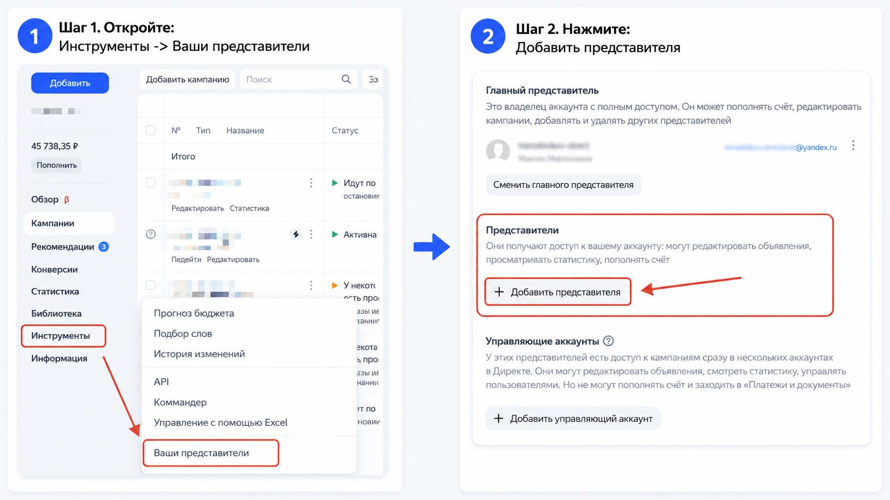

Блог о платном трафике
Как добавить представителя в Яндекс Директ
Если вам нужно дать доступ к рекламе сотруднику, директологу или подрядчику, в Яндекс Директе для этого есть отдельный механизм - представители. Передавать логин и пароль от основного аккаунта не нужно.
На практике этот запрос возникает постоянно. Собственник бизнеса хочет, чтобы специалист вел рекламу, смотрел статистику и при необходимости вносил правки. Но при этом хочется сохранить контроль над кабинетом.
Ниже покажу, как добавить представителя в Яндекс Директ, какие права ему можно выдать и в каких случаях лучше использовать не представителя, а управляющий аккаунт.
Кто такой представитель в Яндекс Директе
Представитель - это отдельный аккаунт Яндекса, которому вы выдаете доступ к вашему кабинету в Директе.
У представителя может быть один из двух уровней доступа:
- полный доступ;
- только чтение.
При полном доступе человек может редактировать кампании, смотреть статистику, переносить средства, оплачивать рекламу и выполнять другие действия в кабинете.
При доступе «Только чтение» он может лишь просматривать настройки и статистику. Доступа к балансу и оплате в этом режиме нет.
Среди всех представителей один всегда является главным. Именно главный представитель может добавлять и удалять других представителей, а также менять им уровень доступа.
Когда нужен именно представитель, а не управляющий аккаунт
Если коротко, представитель подходит в тех случаях, когда вы даете доступ конкретному человеку к одному рекламному кабинету.
Управляющий аккаунт чаще используют специалисты, которые ведут несколько клиентов и переключаются между разными кабинетами из одного логина.
Для обычной задачи «дать доступ сотруднику или подрядчику к моему Директу» чаще всего подходит именно представитель. Если же случай второй, посмотрите отдельную инструкцию о том, как добавить управляющий аккаунт в Яндекс Директ.
Как добавить представителя в Яндекс Директ
Путь в интерфейсе такой: «Инструменты» -> «Ваши представители».
Дальше все делается за несколько шагов.
Шаг 1. Откройте раздел «Ваши представители»
Зайдите в нужный рекламный кабинет Яндекс Директа.
В левом меню нажмите «Инструменты», затем выберите пункт «Ваши представители».
На этой странице Яндекс показывает три блока:
- главный представитель;
- представители;
- управляющие аккаунты.
Вам нужен именно блок «Представители».
Шаг 2. Нажмите «Добавить представителя»
В блоке «Представители» нажмите кнопку «Добавить представителя».
После этого откроется форма для добавления нового пользователя.

Шаг 3. Укажите логин Яндекса
Здесь есть важный нюанс. Яндекс просит указать логин аккаунта, зарегистрированного в Яндексе, в формате login@yandex.ru.
Но доступ выдается именно для логина Яндекса, а не для произвольного email.
Шаг 4. Заполните данные и выберите уровень доступа
После ввода логина Яндекс предложит указать персональные данные представителя и выбрать уровень доступа.
Обычно выбор такой:
- полный доступ - если человек будет полноценно вести рекламу;
- только чтение - если ему нужно только смотреть статистику и настройки.
После этого сохраните изменения.
Готово - представитель появится в списке.
Кто может добавить представителя
Добавить представителя может только главный представитель аккаунта.
Если кнопки нет или раздел не дает изменить доступы, сначала проверьте, под каким аккаунтом вы вошли. Часто проблема именно в этом.
Какие права лучше выдавать
Тут все зависит от роли человека.
Если это подрядчик или штатный директолог, который должен запускать кампании, редактировать объявления и работать с настройками, обычно нужен полный доступ. Чтобы понимать, какие настройки специалист будет менять, посмотрите, что входит в работу над рекламой.
Если это собственник, аналитик, руководитель отдела или другой специалист, которому нужна только отчетность, чаще хватает режима «Только чтение».
Я обычно советую идти по простому правилу: выдавайте тот уровень доступа, который нужен для работы, и не больше.
Почему иногда не получается добавить представителя
Вот самые частые причины.
Вы вошли не под главным представителем
Если текущий аккаунт не главный, добавить нового представителя не получится.
Указан не тот логин
Нужен именно логин Яндекса в формате login@yandex.ru, а не просто любая почта.
Для полного доступа есть отдельное ограничение
Полный доступ можно выдать только логину, который не зарегистрирован в Балансе.
Что еще важно знать
Есть несколько моментов, которые лучше учитывать заранее.
- Количество представителей у одного аккаунта не ограничено.
- Представитель с полным доступом может управлять кампаниями не только в Директе, но и в других коммерческих сервисах Яндекса.
- Яндекс рекомендует использовать только те аккаунты, которые вы зарегистрировали сами.
- Главный представитель получает уведомления по всем кампаниям.
- Обычный представитель получает уведомления только по тем кампаниям, где указан его email в настройках.
Как удалить представителя, если доступ больше не нужен
Если сотрудничество закончилось или человеку больше не нужен доступ, его можно удалить в том же разделе.
Путь такой же: «Инструменты» -> «Ваши представители».
Дальше в блоке «Представители» рядом с нужным логином нажмите меню действий и выберите удаление.
После этого пользователь потеряет доступ к управлению кампаниями.
Что выбрать бизнесу на практике
Если у вас один бизнес и нужно просто дать доступ специалисту к рекламе, представитель - нормальное и понятное решение.
Если специалист ведет сразу несколько кабинетов и ему неудобно работать через отдельные логины, лучше посмотреть в сторону управляющего аккаунта.
Самое главное - не передавать подрядчику логин и пароль от основного аккаунта. В Директе для этого уже есть штатные инструменты, и лучше пользоваться именно ими.
Если доступ нужен для того, чтобы кто-то взял рекламу на себя, посмотрите, как я настраиваю и веду Яндекс Директ.
Частые вопросы
Можно ли добавить представителя без полного доступа?
Да. Для представителя можно выбрать режим «Только чтение», если человеку не нужно редактировать рекламу.
Может ли представитель оплачивать рекламу?
Да, если у него полный доступ. В режиме «Только чтение» доступа к балансу и оплате нет.
Можно ли добавить несколько представителей?
Да. Общее количество представителей у аккаунта не ограничено.
Почему Яндекс не принимает логин представителя?
Чаще всего причина в том, что указан не логин Яндекса, а обычный email. Еще одна причина - полный доступ нельзя выдать логину, который зарегистрирован в Балансе.
Что лучше - представитель или управляющий аккаунт?
Если доступ нужен к одному кабинету - обычно достаточно представителя. Если человек работает сразу с несколькими кабинетами - удобнее управляющий аккаунт.
Коротко
Чтобы добавить представителя в Яндекс Директ, откройте «Инструменты» -> «Ваши представители», найдите блок «Представители», нажмите «Добавить представителя», укажите логин Яндекса, заполните данные и выберите уровень доступа.
Если нужен простой доступ к одному кабинету - этого обычно достаточно. Если же специалист ведет сразу несколько аккаунтов, стоит отдельно посмотреть вариант с управляющим аккаунтом.